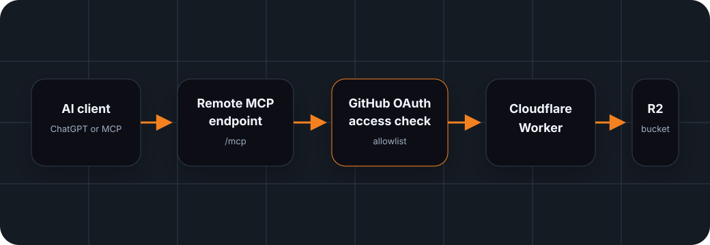

Ownership
Your bucket. Your Worker. Your credentials.
The project is self-hosted. You deploy the Worker, bind your own R2 bucket, and provide the credentials needed for the optional surfaces you enable.
Cloudflare R2 Remote MCP Worker
Use your own Cloudflare R2 bucket from ChatGPT or any compatible remote MCP client through a Worker-hosted MCP endpoint.
A self-hosted remote MCP server that lets ChatGPT or compatible AI clients read and manage objects in your own Cloudflare R2 bucket.
How it works
The client does not need local filesystem access. It calls a public MCP endpoint hosted by your Cloudflare Worker. Access is checked through a GitHub OAuth allowlist before object operations reach your bound R2 bucket.

Ownership
The project is self-hosted. You deploy the Worker, bind your own R2 bucket, and provide the credentials needed for the optional surfaces you enable.
What clients can do
Clients can list, read, write, upload or download base64 payloads, copy, move, rename, and delete objects in the configured R2 surface.
Security boundary
Public deployments use GitHub OAuth allowlisting. Authless mode is only for local development or endpoints protected by another access layer.
Deployment pieces
The required deployment surface is a Worker with an R2 binding. Optional presigned URLs use R2 S3 credentials. Optional account visibility remains read-only.
Not exposed
Destructive account administration is not exposed. Bucket creation, bucket deletion, CORS mutation, lifecycle mutation, domain mutation, and notification mutation stay outside the MCP tool surface.